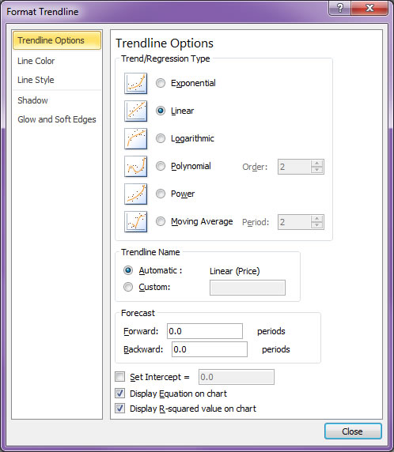

In this assignment, you apply several common Excel features to solve basic SmartBean business problems involving profit, equipment financing, advertising-price lookups, transaction-code parsing, and chart-based analysis.
After completing this assignment, you will be able to:
You may use the course agent to explain concepts, provide a simple solution, and then show a more advanced solution when appropriate. The agent may provide exact formulas, but you must verify the formulas in your workbook.
Suggested course-agent prompt: I am completing MIS362 Formative02. Explain the Excel concept, show a simple solution, then show a more advanced solution when useful. You may provide the exact formula, but explain each argument and tell me how to verify the result.
I am completing MIS362 Formative02. Explain the Excel concept, show a simple solution, then show a more advanced solution when useful. You may provide the exact formula, but explain each argument and tell me how to verify the result.
The AI feedback system does not automatically receive your workbook. Include the requested worksheet name, cell, formula, result, and verification in each written answer.
More than one method may be correct. The AI should not penalize an accurate, clearly explained, and verified alternative method.
The purpose of this assignment is to review some of the most basic business uses of Excel through the SmartBean Coffee scenario. You will work with a supplied workbook containing separate worksheets for SmartBean profit, equipment financing, advertising-price lookups, transaction-code parsing, summary statistics, and chart-based analysis.
Complete the exercises in order because later exercises build on the same habits: inspect the worksheet, understand the business question, choose an appropriate Excel feature, verify the result, and explain what the result means.
Download Formative02.xlsx and save a working copy as Formative02.xlsx in your assigned course folder.
PMT()
The workbook contains both 3-Vlookup and Xlookup worksheets. Complete the same SmartBean advertising-pricing problem twice: first with VLOOKUP(), then with XLOOKUP(). Using the same problem makes it easier to compare the two functions directly.
VLOOKUP()
XLOOKUP()
LEFT()
MID()
RIGHT()

Before submitting, confirm that the workbook visibly contains:
#N/A
#VALUE!
#REF!
#DIV/0!
(50) Save and upload Formative02.xlsx to the D2L Formative02 assignment folder.
Formative02
(10) Home Page Hyperlink: Verify that this assignment is linked from your course home page.
(10) Webpage Submission: Press the Submit button at the top or bottom of this page.
The AI receives each readonly question and the corresponding student answer. Include the requested formulas, values, methods, and verification because the workbook itself is not sent to the AI.
Review the feedback, correct the workbook or written responses, and resubmit as needed before the deadline.